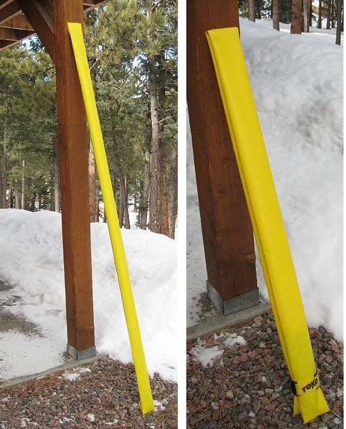

| PVC Paddle Bags ( page 5 of 5) | Menu Last Page Next Page |
|

The completed paddle bag containing a one-piece GP and a 2-piece take-apart GP. A commercial velcro ski strap holds the paddle bag end secure, but a homemade strap made of PVC and Velcro is just as effective.
|
|